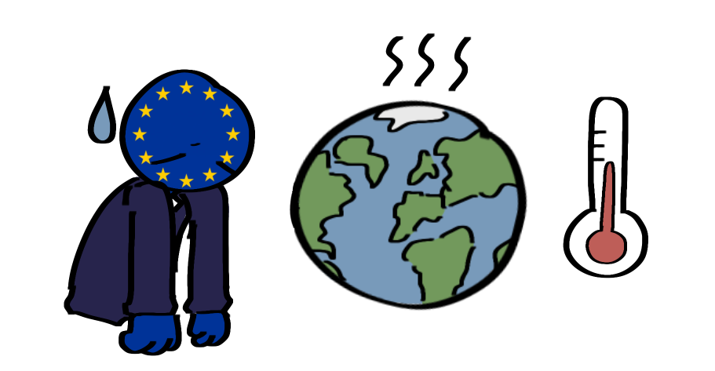

Die Umweltpolitik der EU soll Umwelt und Klima schützen. Die Umsetzung der Maßnahmen war jedoch nicht immer einfach. Viele Projekte kosteten viel Geld und brauchten Zeit. Außerdem arbeiteten die EU-Länder nicht immer gleich schnell zusammen. Folgende Herausforderungen waren dabei besonders wichtig:
-
Umweltmaßnahmen waren oft teuer
- Für neue Projekte und Technologien wurde viel Geld benötigt
-
Langsame Umsetzung
- Viele Maßnahmen brauchen viel Zeit
- Große Veränderungen konnten nicht sofort umgesetzt werden
-
Unterschiedliche Umsetzung in den Ländern
- Nicht alle EU-Länder handelten gleich schnell
- Manche Staaten setzten Umweltregeln später um
-
Konflikte mit der Wirtschaft
- Strengere Umweltregeln sorgten manchmal für Probleme
- Industrie und Landwirtschaft mussten oft mehr Geld investieren, weil sie ihre Arbeit anpassen oder neue Technik kaufen mussten
- Umweltprobleme bleiben bestehen
-
Klimawandel und Umweltverschmutzung bleiben große Probleme
- Viele Tiere und Pflanzen sind weiterhin bedroht
